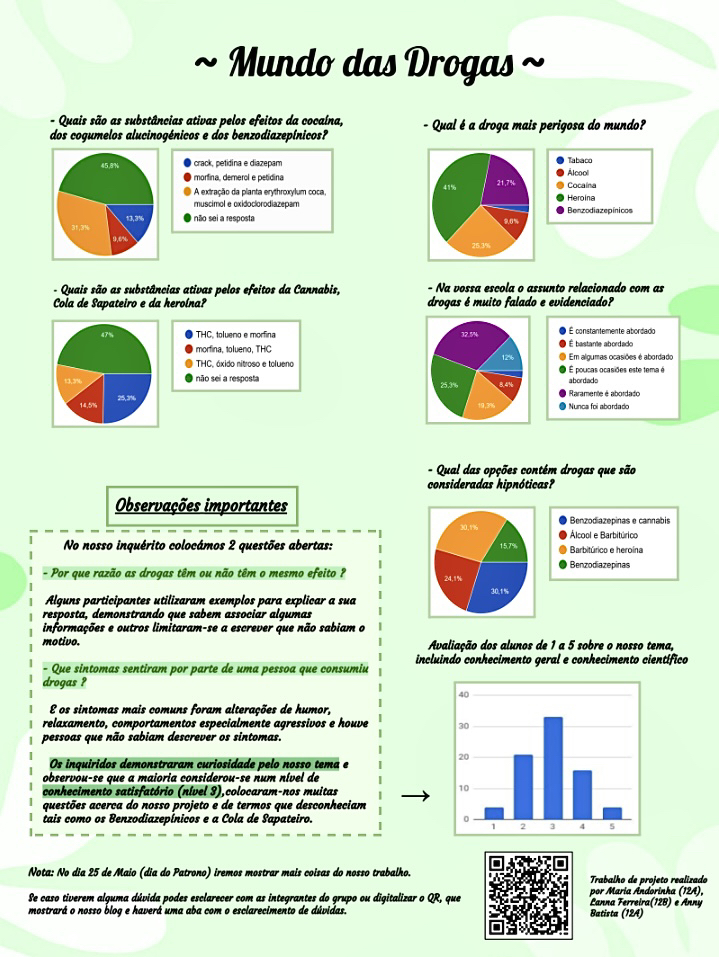

Inquéritos

Entrevista
Esta entrevista teve a participação especial do Dr. José Tempero, que trata dos assuntos médicos da Tilray.
Mas o que é a Tilray?
Para quem não sabe a Tilray é uma empresa farmacêutica de origem canadiana, responsável pelo fornecimento de substâncias à base da planta Cannabis Sativa para fins medicinais, de acordo com os mais elevados padrões de qualidade a dezenas de milhares de pacientes em dezoito países dos cinco continentes do mundo, através das nossas filiais na Europa, Canadá, Austrália e América Latina, e através de acordos estabelecidos com distribuidores farmacêuticos.
Questões que colocámos na entrevista:
- A legalização da Cannabis aumentaria o seu consumo?
- Usar a Cannabis mata e "queima" os neurônios?
- A Cannabis auxilia em quais doenças? (Em fatores de cura)
- Qual é a diferença entre o THC e CBD?
- Como é feita a cultivação (plantação) da Cannabis? (Como é tratado e como favorece para os comprimidos)
- Perguntas opcionais (são as perguntas relacionadas com os cogumelos alucinógenos)
- A Cannabis é uma droga inofensiva para o sujeito porque é natural?
- As drogas não são tão perigosas como se diz. É sempre possível controlar o seu consumo?
- Misturar a droga com a comida diminui os efeitos?
- Existem drogas leves e drogas pesadas?
- O álcool é pior do que a Cannabis e a Heroína? (Pior porque mata mais ou pior por causa das consequências dos efeitos causados no organismo ao longo do tempo)
- O efeito alucinógeno ocorre a curto prazo ou ao longo prazo ao manter seu contacto com os esporos?
- Falar sobre a observação do conhecimento dos alunos da nossa escola sobre o assunto de drogas, mostrando assim os resultado dos questionários para o entrevistado para sabermos a opinião dele sobre como podemos melhorar e aumentar o conhecimento dos jovens em relação a isso
- Recomendação de séries e livros para os espectadores terem mais conhecimento.
- Mensagem para os jovens em relação ao assunto abordado, uma mensagem de sensibilização
Gostaste da entrevista e queres saber mais sobre esta empresa?
Temos aqui o link para saberes mais: https://tilraymedical.pt/
Contacto do Dr. José Tempero
Contactos: Dr.José Tempero: jose.tempero@tilray.com
Número de telefone: +49 151 706 24 149